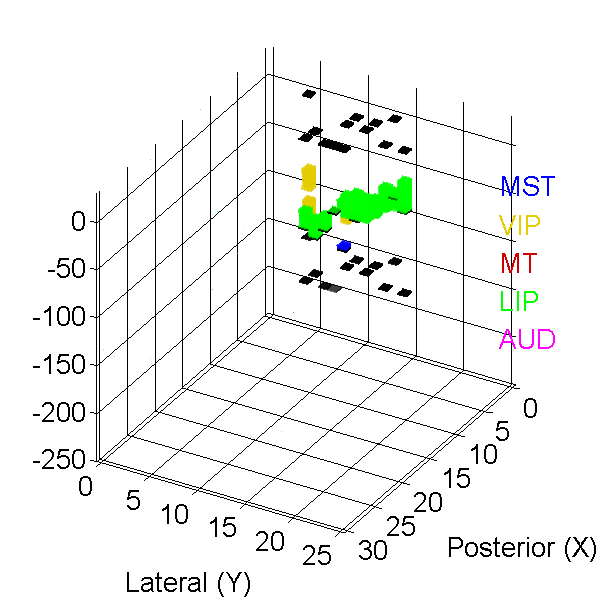
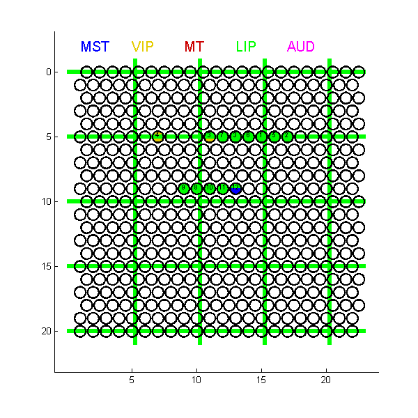

Contents
function DrawMapping()
% DrawMapping.m % by HH @ Gu Lab 2013
Parameters
clc; clear global global maxX maxY maxZ movDis GMTypes data; global hemisphere; global gridRange; global MRI_path MRI_offset; maxX = 30; % Grid size maxY = 25; maxZ = 250; % Drawing range (in 100 um) movDis = 150; % Maximum travel distance of the microdriver (in 100 um) V = ones(30,25,maxZ + 30,3); % Matrix to be rendered. The z-resolution = 100 um.
Define our area types here
GMTypes = { % 'Type', ColorCode (RGB);
'GM',[0.9 0.9 0.9]; % Gray matter without visual modulation
'VM',[0 0 0]; % Visual modulation but not sure to which area it belongs
'LIP',[0 1 0];
'VIP',[.9 .8 0];
'MST',[0 0 1];
'MT',[0.8 0 0];
'MIP',[0.6 0.6 0.6]; % [0 0.6 0]
'AUD',[1 0 1];
};
for i = 1:length(GMTypes)
eval([GMTypes{i,1} '= -' num2str(i) ';']); % This is a trick.
end
Input our mapping data here
% Polo_right % %{ toPlotTypes3D = [ MST VIP MT LIP AUD]; % Which area types do we want to plot in 3D plot? toPlotTypes_zview = [MST VIP MT LIP AUD]; % Which area types do we want to plot ? gridRange = [0 20; 1 22]; % Grid plotting ragne = [xLow xHigh; yLow yHigh] hemisphere = 'R'; data = { %{[Session(s)], [LocX(Posterior) LoxY(Lateral)], [GuideTube(cm) Offset(cm)], [AreaType, Begin(100um), End(100um); ...] , electrode retrieval} % When you are not sure about one area, use "AreaType-100" instead {1,[5,15],[2.0 0.0],[GM 0 20; LIP 44 69]} {2,[5,17],[2.0 0.0],[GM 0 17; LIP 32 64],64} {3,[5,13],[1.9 0.0],[GM 21 37; LIP 71 96]} {3,[5,11],[1.9 0.0],[GM 31 58; LIP 74 97; VIP 97 103]} {4,[5,7],[1.7 0.0],[GM 0 21; VIP 78 100; VIP 111 129],129} {5,[5,16],[1.7 0.0],[GM 21 51; LIP 76 82],82} {6,[5,14],[1.8 0.0],[GM 0 15; GM 30 43; LIP 79 98]} {7,[5,12],[1.8 0.0],[GM 38 50; LIP 79 107],107} {8,[9,10],[1.8 0.0],[GM 43 73; LIP 91 111],111} {9,[9,9],[1.9 0.0],[GM 0 12; GM 35 59; LIP 75 94],94} {10,[9,11],[1.9 0.0],[GM 28 56; LIP 75 90],90} {11,[9,12],[1.9 0.0],[GM 24 49; LIP 68 69], 69} {12,[9,13],[1.9 0.0],[GM 17 35; LIP 53 62; MST 101 105 ], 105} }; MRI_path = 'Z:\Data\MOOG\Polo\Mapping\MRI\PoloOutput\forDrawMapping\'; MRI_offset = {[-68 55] + 5,[-240 480]}; %} % Hetao_left %{ toPlotTypes3D = [ MST VIP MT LIP AUD]; % Which area types do we want to plot in 3D plot? toPlotTypes_zview = [MST VIP MT LIP AUD]; % Which area types do we want to plot ? gridRange = [5 25; 1 22]; % Grid plotting ragne = [xLow xHigh; yLow yHigh] hemisphere = 'L'; data = { %{[Session(s)], [LocX(Posterior) LoxY(Lateral)], [GuideTube(cm) Offset(cm)], [AreaType, Begin(100um), End(100um); ...] } % When you are not sure about one area, use "AreaType-100" instead {83,[11,16],[1.9 0.0],[GM 4 35]} {83,[11,18],[2.1 0.0],[GM 9 25; GM 68 81; VIP 94 107]} {84,[11,17],[2.1 0.0],[GM 8 30; GM 72 89; VIP 93 101]} {84,[11,19],[2.1 0.0],[GM 45 70; VIP 77 90]} {85,[11,20],[2.1 0.0],[GM 40 66; VIP 73 95]} {86,[11,21],[2.15 0],[GM 37 56; AUD 106 120]} {86,[11,22],[2.15 0],[GM 18 52; LIP 62 82; AUD 105 140]} {87,[12,17],[1.9 0.0],[GM 24 38; GM 67 90; VIP 105 123]} {88,[12,18],[2.05 0],[GM 0 40; GM 49 63; VIP 87 99]} {89,[12,19],[2.05 0],[GM 34 59; VIP 67 90]} {90,[12,16],[1.9 0.0],[GM 8 27; VIP 85 120]} {90,[12,15],[1.9 0.0],[GM 12 30; VIP 99 119]} }; %} % Hetao_right %{ toPlotTypes3D = [ MST VIP MT LIP AUD]; % Which area types do we want to plot in 3D plot? toPlotTypes_zview = [MST VIP MT LIP AUD]; % Which area types do we want to plot ? gridRange = [5 25; 1 22]; % Grid plotting ragne = [xLow xHigh; yLow yHigh] hemisphere = 'R'; data = { %{[Session(s)], [LocX(Posterior) LoxY(Lateral)], [GuideTube(cm) Offset(cm)], [AreaType, Begin(100um), End(100um); ...] } % When you are not sure about one area, use "AreaType-100" instead {1,[20,15],[1.8 0],[GM,43 82; MT,122 128; MT,131 150]}; {2,[20,13],[1.8 0],[GM,40 89; VM,105 114; GM,124 150]}; {3,[22,15],[2.0 0],[GM,40 60; MST, 82 130]}; {4,[18,15],[2.0 0],[GM,40 90; MST, 103 122; MT, 135 140]}; {5,[18,13],[1.8 0.2],[GM,38 60; MST, 80 150]}; {6,[18,11],[1.7 0.1],[GM,60 100; MST, 135 150]}; % u-stim {7,[18,10],[1.7 0.3],[GM,50 86; MST, 117 150]}; {8,[18,9],[1.7 0.5],[GM 43 54; LIP 55 76; MST 110 120]}; {9,[18,8],[1.7 0.1],[GM, 38 63; LIP 91 103]}; {9,[18,17],[2.0 0.2],[GM 39 50; MST 95 137; MT 153 189]}; {10,[18,7],[1.7 0.2],[GM 41 57; VM 57 69; LIP 91 100]}; {10,[18,6],[1.7 0],[GM 69 85; LIP 108 125]} {11,[18,5],[1.6 0.3],[GM 60 83; LIP 90 109]} {11,[18,4],[1.6,0.5],[GM 40 75; LIP 82 108]} {12,[16,15],[1.8 0.5],[MST 123 144]} {[12,15],[16,13],[1.8 0],[GM 60 76; LIP 77 100; MST 130 177]} % u-stim {13,[16,10],[1.9 0.2],[GM 43 67; LIP 68 80]} {13,[16,8],[1.9 0.2],[GM 0 74; LIP 81 106]} {14,[16,17],[2.1 0.4],[MST 42 72; MST 85 115]} {16,[14,17],[2.0 0.5],[GM 12 40; VM 57 77; MST 91 130]} % u-stim {17,[14,15],[2.1 0.3],[GM 43 74; MST 95 124]} % u-stim {17,[14,19],[2.1 0.5],[VM 30 56; VM 75 97; VM 110 130]} {18,[12,15],[2.1 0.3],[GM 20 59; GM 76 84; VM 103 130]} % u-stim {18,[12,17],[2.1 0.5],[GM 27 50; GM 63 79; VM 93 137]} {19,[12,19],[2.1 0.5],[GM 44 77; GM 96 118]} % Sound!! {19,[20,17],[2.1 0.5],[GM 28 61; MST 62 99; MT 117 136]} % u-stim {20,[16,19],[2.3 0.2],[GM 30 56; MST 85 109; MT 116 139]} % u-stim at MT {21,[18,19],[2.3 0.3],[GM 23 36; VM 37 45]} {22,[15,19],[2.3 0.5],[GM 48 74; VM 96 114; MT 123 137]} {22,[20,19],[2.3 0.5],[GM 21 32; VM 33 64; MT 82 130]} {23,[22,17],[2.3 0.5],[MST 42 62; MT 63 103]} % u-stim at MT {24,[22,13],[2.3 0.2],[VM 63 100]} {24,[22,19],[2.3 0.5],[VM 33 45]} {25,[20,11],[2.1 0.3],[GM 25 51; MST 63 103]} % u-stim, sigma, miu {26,[20,9],[2.1 0.3],[GM 27 37; MST 42 84]} % u-stim {27,[22,11],[2.1 0.3],[MST 56 87; VM 148 150]} % u-stim {28,[20,12],[2.1 0.3],[GM 27 54; MST 79 117]} {[29,2],[20,13],[2.1 0.3],[MST 50 82; VM 145 150]} {30,[20,10],[2.0 0.2],[VM 53 82; MST 100 130]} % LIP? {30,[19,11],[2.0 0.3],[MST 52 67; MST 103 126]} {[1,31],[20,15],[2.0 0.2],[VM 25 75; MST 80 108; MT 123 135]} % Oscillation? % u-stim {32,[20,7],[1.8 0.1],[VM 0 45; LIP 59 83]} {33,[20,8],[2.1 0.1],[LIP 0 42]} {34,[18,3],[2.1 0.1],[MIP 35 72; VIP 92 106]} {35,[18,2],[2.1 0.0],[GM 27 35; MIP 56 87; VIP 88 109]} {36,[18,1],[2.0 0.1],[GM 29 36; MIP 74 100; VIP 101 127]} {37,[14,5],[2.0 0.1],[GM 33 45; GM 51 57; GM 90 102; VIP 107 118]} {38,[14,7],[1.9 0.0],[GM 89 115; LIP 125 138]} {38,[14,6],[1.9 0.2],[GM 78 102; LIP 118 125]} {39,[14,2],[1.9 0.1],[GM 34 49; GM 78 95]} {39,[14,3],[1.9 0.1],[GM 34 40; GM 72 87]} {40,[14,4],[1.9 0.1],[GM 45 59; LIP 101 110; VIP 115 130]} {41,[16,4],[1.7 0.2],[GM 35 43; GM 52 67; VIP 94 114; VIP 137 149]} {42,[16,6],[1.7 0.3],[GM 27 36; VM 62 80; LIP 98 122]} {42,[16,2],[1.7 0.4],[GM 28 39; VIP 83 118]} {43,[12,8],[2.0 0.0],[VIP 94 115]} {45,[12,6],[2.0 0.0],[VIP 84 112]} {45,[12,20],[2.3 0.2],[GM 62 94; AUD 110 130]} {46,[12,11],[1.9 0.0],[GM 46 76; LIP 95 113]} {46,[12,4],[1.8 0.0],[GM 45 63; GM 87 102]} {47,[10,10],[1.9 0.0],[VIP 65 89; VIP 95 106]} {48,[10,12],[1.9 0.0],[GM 45 70; VIP 81 102]} {48,[10,8],[1.9 0.0],[GM 0 1]} {49,[10,14],[1.9 0.0],[GM 9 32; GM 40 61; LIP 78 91; VIP 93 98]} {50,[8,12],[1.9 0.0],[VIP 64 90; AUD 127 140]} {50,[12,12],[1.9 0.0],[GM 27 47; LIP 67 89]} {51,[8,10],[1.8 0.0],[GM 30 40]} {51,[8,8],[1.8 0.0],[GM 30 60]} {51,[8,14],[1.9 0.0],[GM 14 25; GM 65 89; LIP 98 110; GM 133 145]} {52,[6,12],[1.9 0.0],[GM 7 60]} {52,[6,14],[1.9 0.0],[GM 12 30; VIP 88 105; GM 138 150]} {52,[6,16],[1.9 0.3],[GM 56 77; GM 114 134]} {53,[18,12],[2.1 0.0],[VM 7 56; MST 110 128]} {54,[12,8],[1.9 0.1],[GM 66 74; VIP 74 117]} {55,[12,10],[1.9 0.0],[GM 4 12; GM 54 80; VIP 93 109]} {56,[11,11],[1.9 0.0],[GM 60 87; VIP 93 106]} {57,[12,9],[1.7 0.0],[GM 20 40; VIP 96 125]} {58,[12,7],[1.8 0.0],[GM 10 23; VIP 100 118]} {59,[11,10],[1.8 0.0],[GM 44 90; VIP 111 146]} {60,[11,9],[1.8 0.0],[GM 3 15; VIP 87 113]} {61,[12,11],[1.9 0.0],[GM 35 65; LIP 79 100]} {63,[13,9],[1.9 0.0],[GM 12 29; LIP 86 115]} {65,[10,11],[1.75 0.0],[GM 9 22; LIP 92 102; VIP 104 124]} {66,[11,12],[1.9 0.0],[GM 12 25; GM 67 93; VIP 106 109]} {66,[11,13],[1.9 0.0],[GM 12 23; GM 53 78; VIP 96 111]} {67,[10,9],[1.75 0.0],[GM 0 1]} {68,[9,11],[1.75 0.0],[GM 10 17]} {69,[9,12],[1.75 0.0],[GM 9 14; VIP 89 113]} {70,[9,14],[1.85 0.0],[GM 9 26; LIP 70 91]} {71,[20,12],[2.1 0.3],[GM 38 65; MT 116 133]} {73,[20,11],[2.0 0.3],[GM 22 60; MST 91 96]} {74,[19,13],[2.0 0.0],[GM 8 23; MST 86 103]} {75,[19,12],[2.0 0.0],[MST 62 95; MST 124 150]} {76,[18,14],[2.1 0.2],[MST 95 122; MST 134 139]} {77,[18,16],[2.1 0.2],[GM 40 57; MST 102 120]} {78,[12,9],[1.7 0.0],[GM 31 47; GM 100 108; VIP 112 131]} {78,[12,10],[1.7 0.2],[GM 3 16; GM 70 80; VIP 82 95]} {79,[9,13],[2.0 0.0],[GM 10 74; LIP 84 99]} {80,[13,8],[1.9 0.0],[GM 70 80; VIP 82 97]} {80,[13,7],[1.9 0.0],[GM 26 68; VIP 95 119]} {81,[10,13],[1.8 0.0],[GM 7 32; GM 49 78; LIP 90 107]} {81,[11,12],[2.1 0.0],[GM 0 20; GM 42 70; VIP 80 100]} {82,[13,6],[1.9 0.0],[GM 11 24; VIP 120 141]} {82,[13,5],[1.9 0.1],[GM 0 17; GM 54 83]} {82,[12,5],[1.9 0.0],[GM 4 18]} }; %}
========== 3-D Visualization ========== %%
% toPlotTypes3D = [GM MST VIP MT LIP AUD]; % Which area types do we want to plot in 3D plot? % toPlotTypes3D = VIP ; % Which area types do we want to plot in 3D plot? for channel = 1:length(data) gridLoc = data{channel}{2}; GMData = data{channel}{4}; if isempty(GMData); continue; end; GuideTubeAndOffset = data{channel}{3}; offSet = round((GuideTubeAndOffset(2) + GuideTubeAndOffset(1) - 2.0) * 100); % Related to Guide Tube 2.0 cm!! for GMType = -size(GMTypes,1):-1 % For each area type GMThisType = find(GMData(:,1) == GMType); % Read out ranges for this type if isempty(GMThisType) || isempty(intersect(toPlotTypes3D,GMType)); continue; end % If absent in this channel or absent in areas we want to plot, next type GMPos = []; % Clear cache for i = 1:length(GMThisType) % For each appearance % Attach each appearance to position cache GMPos = [GMPos (maxZ - offSet - GMData(GMThisType(i),3)):(maxZ - offSet - GMData(GMThisType(i),2))]; end % Add color to positions in the cache try if strcmp(hemisphere, 'R') V(gridLoc(1), maxY - gridLoc(2), GMPos, :) = repmat(GMTypes{-GMType,2},length(GMPos),1); else V(gridLoc(1), gridLoc(2), GMPos, :) = repmat(GMTypes{-GMType,2},length(GMPos),1); end catch fprintf('Warning: Out of Range (Session %g, Channel [%g,%g], GMType %s)\n', channel, data{channel}{2}(1), data{channel}{2}(2), GMTypes{-GMType,1}); % keyboard; end end % Add start and end markers if strcmp(hemisphere, 'R') V(gridLoc(1), (maxY - gridLoc(2)),(maxZ - offSet - 2):(maxZ - offSet - 1),:) = repmat([0 0 0],2,1); if length(data{channel}) <5 V(gridLoc(1), (maxY - gridLoc(2)),(maxZ - offSet - movDis - 1):(maxZ - offSet - movDis),:) = repmat([0 0 0],2,1); else V(gridLoc(1), (maxY - gridLoc(2)),(maxZ - offSet - data{channel}{5} - 1):(maxZ - offSet - data{channel}{5}),:) = repmat([0 0 0],2,1); end else V(gridLoc(1), (gridLoc(2)),(maxZ - offSet - 2):(maxZ - offSet - 1),:) = repmat([0 0 0],2,1); if length(data{channel})<5 V(gridLoc(1), (gridLoc(2)),(maxZ - offSet - movDis - 1):(maxZ - offSet - movDis),:) = repmat([0 0 0],2,1); else V(gridLoc(1), (gridLoc(2)),(maxZ - offSet - data{channel}{5} - 1):(maxZ - offSet - data{channel}{5}),:) = repmat([0 0 0],2,1); end end end % Render the mapping results using "vol3d" function % close all; set(figure(801),'Position',[10 100 600 600]); set(0, 'DefaultAxesXTickMode', 'auto', 'DefaultAxesYTickMode', 'auto', 'DefaultAxesZTickMode', 'auto'); vol3d('cdata',V); view(-150,30); axis tight; daspect([1,1,10]); alphamap('rampup'); alphamap(.5 .* alphamap); % Transparency grid on; grid minor; set(gca,'GridLineStyle','-'); set(gca,'xtick',-0.5:5:maxY-0.5); if strcmp(hemisphere,'R') set(gca,'xticklabel','25|20|15|10|5|0'); else set(gca,'xticklabel','0|5|10|15|20|25'); end xlim([-1 maxY]); set(gca,'ytick',-0.5:5:maxX-0.5); set(gca,'yticklabel','0|5|10|15|20|25|30'); ylim([-1 maxX]); set(gca,'ztick',0:50:maxZ); set(gca,'zticklabel','-250|-200|-150|-100|-50|0'); ylabel('Posterior (X)') xlabel('Lateral (Y)') for i = 1:length(toPlotTypes3D) text(0, 0, maxZ-i*40, GMTypes{-toPlotTypes3D(i),1},'color',GMTypes{-toPlotTypes3D(i),2},'FontSize',20); end; set(gcf,'color','w'); set(findall(gcf,'fontsize',10),'fontsize',20); % k=1; % for i = 1:150 % view(-170+i*.5,20+i/10); % drawnow; % mov(k) = getframe(gcf); % k=k+1; % end % % for i = 150:-1:1 % view(-170+i*.5,20+i/10); % drawnow; % mov(k) = getframe(gcf); % k=k+1; % end % % movie2avi(mov,'Test.avi');
============ 2-D Visualization (Grid view from the top) =============== %
radius = 0.42; % Radius of each hole (interval = 1) % Plot grid outline set(figure(802),'Position',[10 100 600 600]); clf hold on; axis equal ij; x1 = gridRange(1,1); x2 = gridRange(1,2); y1 = gridRange(2,1); y2 = gridRange(2,2); xlim([y1-2,y2+2]); % Frame interval = 5; xLoc = intersect(x1:x2,0:interval:100); yLoc = intersect(y1:y2,0:interval:100); xLines = line(repmat([y1-1;y2+1],1,length(xLoc)),repmat(xLoc,2,1)); % xLines yLines = line(repmat(yLoc+0.25,2,1), repmat([x1-1;x2+1],1,length(yLoc))); % yLines set(xLines,'LineWidth',5,'Color','g'); set(yLines,'LineWidth',5,'Color','g'); set(gca,'xtick', yLoc); set(gca,'ytick', xLoc); % Parallel drawing (to speed up) xOffsets = repmat(x1:x2, y2-y1+1,1); xOffsets = xOffsets(:)'; yOffsets = repmat([(y1:y2)+0.5*~mod(x1,2) (y1:y2)+0.5*mod(x1,2)], 1, fix((x2-x1 + 1)/2)); if mod(x2-x1+1,2) == 1 yOffsets = [yOffsets y1:y2]; end t = linspace(0,2*pi,100)'; xGrid = radius * repmat(sin(t),1,length(xOffsets)) + repmat(xOffsets,length(t),1); yGrid = radius * repmat(cos(t),1,length(yOffsets)) + repmat(yOffsets,length(t),1); set(fill(yGrid,xGrid,[1 1 1]),'LineWidth',1.5); % White color % Plot mapping result for channel = 1:length(data) xCenter = data{channel}{2}(1); yCenter = data{channel}{2}(2) + 0.5 * ~mod(data{channel}{2}(1),2); % Paint haveTypes = intersect(toPlotTypes_zview,data{channel}{4}(:,1)); % Find which areas this channel has. if isempty(haveTypes) % If there is no types of interest, paint using the color of GM t = linspace(0,2*pi,100)'; xMap = radius * sin(t) + xCenter ; yMap = radius * cos(t) + yCenter; set(fill(yMap,xMap,GMTypes{-GM,2}),'ButtonDownFcn',@SelectChannel); c = 'w'; else % Else, we paint colors for each type for iType = 1:length(haveTypes) t = linspace(2*pi/length(haveTypes)*(iType-1), 2*pi/length(haveTypes)*iType, 100)'; xMap = 0.99 * radius * [0; sin(t)] + xCenter; yMap = 0.99 * radius * [0; cos(t)] + yCenter; set(fill(yMap,xMap,GMTypes{-haveTypes(iType),2}),'LineStyle','none','ButtonDownFcn',@SelectChannel); end if mean(GMTypes{-haveTypes(1),2}) > 0.3 c = 'k'; else c = 'y'; end end %------ Denotations -----% % Session No. text(yCenter, xCenter-0.1, num2str(data{channel}{1}),'FontSize',7,'color',c,'HorizontalAlignment','center','ButtonDownFcn',@SelectChannel); end % Legend for i = 1:length(toPlotTypes_zview) text(y1+(i-1)*4, x1-2, GMTypes{-toPlotTypes_zview(i),1},'color',GMTypes{-toPlotTypes_zview(i),2},'FontSize',15); end; if strcmp(hemisphere,'L') set(gca,'xdir','rev'); end
Call back for 2-D Grid View
function SelectChannel(~,~) global maxX maxY maxZ movDis GMTypes data MRI_path MRI_offset; global gridRange; global hemisphere; % Which channel do we select? pos = get(gca,'CurrentPoint'); pos = pos(1,1:2); xSelect = round(pos(2)); ySelect = round(pos(1)- 0.5 * ~mod(xSelect,2)); figure(802); rectangle('Position',[gridRange(2,2)+1.4,gridRange(1,1)-1,0.2,gridRange(1,2)-gridRange(1,1)+2],'FaceColor','w','EdgeColor','w'); rectangle('Position',[gridRange(2,2)+1.4,xSelect-0.1,0.2,0.2],'FaceColor','k'); figurePosition = [700 100 100 600]; set(figure(803),'Position',figurePosition); clf % 2-D Visualization (Coronal) h_coronal = axes('Position',[0.15 0.1 0.8 0.8]); axis ij; hold on; % Overlapping MRI data try MRI = imread([MRI_path num2str(xSelect) '.bmp']); h_MRI = image(MRI_offset{1}, MRI_offset{2},MRI); set(h_MRI,'AlphaData',0.7); catch disp('No MRI data found...'); end % Frame xlim([gridRange(2,1) gridRange(2,2)+1]); ylim([-30 maxZ]); grid on; set(h_coronal,'XMinorGrid','on','XMinorTick','on'); title(sprintf('%s [%g, %g]',hemisphere,xSelect,ySelect)); % Keep scale aspectRatio = (range(ylim) * 100) / (range(xlim) * 800); % grid interval = 0.8 mm set(figure(803),'Position',[figurePosition(1:2) figurePosition(4)/aspectRatio figurePosition(4)]); for channel = 1:length(data) if data{channel}{2}(1) == xSelect % Only plot the line we select yLoc = data{channel}{2}(2); GMData = data{channel}{4}; if isempty(GMData); continue; end; GuideTubeAndOffset = data{channel}{3}; offSet = round((GuideTubeAndOffset(2) + GuideTubeAndOffset(1) - 2.0) * 100); % Related to Guide Tube 2.0 cm!! for GMType = -size(GMTypes,1):-1 % For each area type GMThisType = find(GMData(:,1) == GMType); % Read out ranges for this type if isempty(GMThisType); continue; end % If absent, next type for i = 1:length(GMThisType) % For each appearance zBegin = GMData(GMThisType(i),2) + offSet; zEnd = GMData(GMThisType(i),3) + offSet; rectangle('Position',[yLoc,zBegin,1,zEnd-zBegin],'LineWidth',2,'EdgeColor',GMTypes{-GMType,2}); end end for GMType = -size(GMTypes,1):-1 % For each area type (that we are NOT SURE!!) GMThisType = find(GMData(:,1) == GMType - 100); % Read out ranges for this type (that we are NOT SURE!!) if isempty(GMThisType); continue; end % If absent, next type for i = 1:length(GMThisType) % For each appearance zBegin = GMData(GMThisType(i),2) + offSet; zEnd = GMData(GMThisType(i),3) + offSet; % Note we use dotted line here to mark areas that we are not sure rectangle('Position',[yLoc,zBegin,1,zEnd-zBegin],'LineWidth',2,'EdgeColor',GMTypes{-GMType,2},'LineStyle',':'); end end % Add start and end markers if yLoc == ySelect rectangle('Position',[yLoc,offSet,1,1],'LineWidth',2,'FaceColor','r','EdgeColor','r'); if length(data{channel})<5 rectangle('Position',[yLoc,offSet + movDis,1,1],'LineWidth',2,'FaceColor','r','EdgeColor','r'); else rectangle('Position',[yLoc,offSet + data{channel}{5},1,1],'LineWidth',2,'FaceColor','r','EdgeColor','r'); end else rectangle('Position',[yLoc,offSet,1,1],'LineWidth',2,'FaceColor','k'); if length(data{channel})<5 rectangle('Position',[yLoc,offSet + movDis,1,1],'LineWidth',2,'FaceColor','k'); else rectangle('Position',[yLoc,offSet + data{channel}{5},1,1],'LineWidth',2,'FaceColor','k'); end end end end xlabel('Grid Y No. (x 800 um)'); ylabel('Depth (x 100 um)'); % rectangle('Position',[ySelect+0.2,maxZ*0.95,0.6,10],'FaceColor','r','EdgeColor','r'); if strcmp(hemisphere,'L') set(gca,'xdir','rev'); end % 1-D Visualization (Single Channel)